Paso a paso para usar el sistema
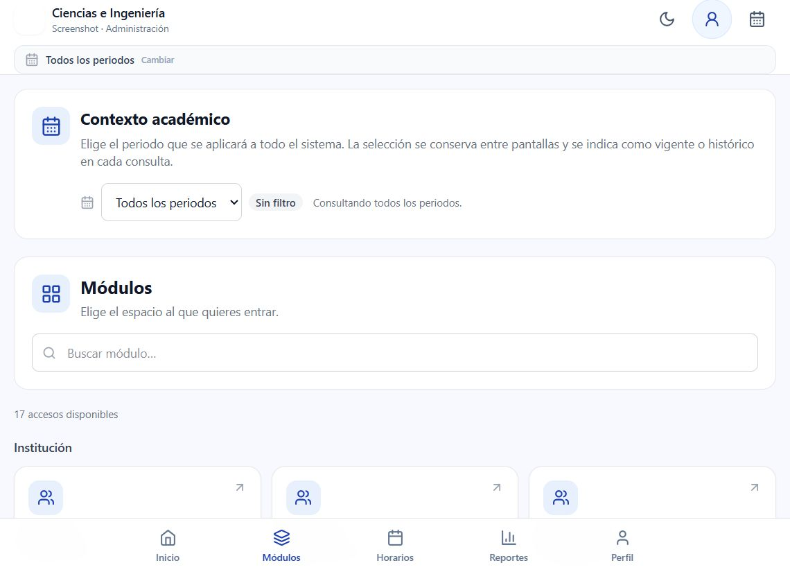
Elige el periodo academico que se aplicara a todo el sistema.
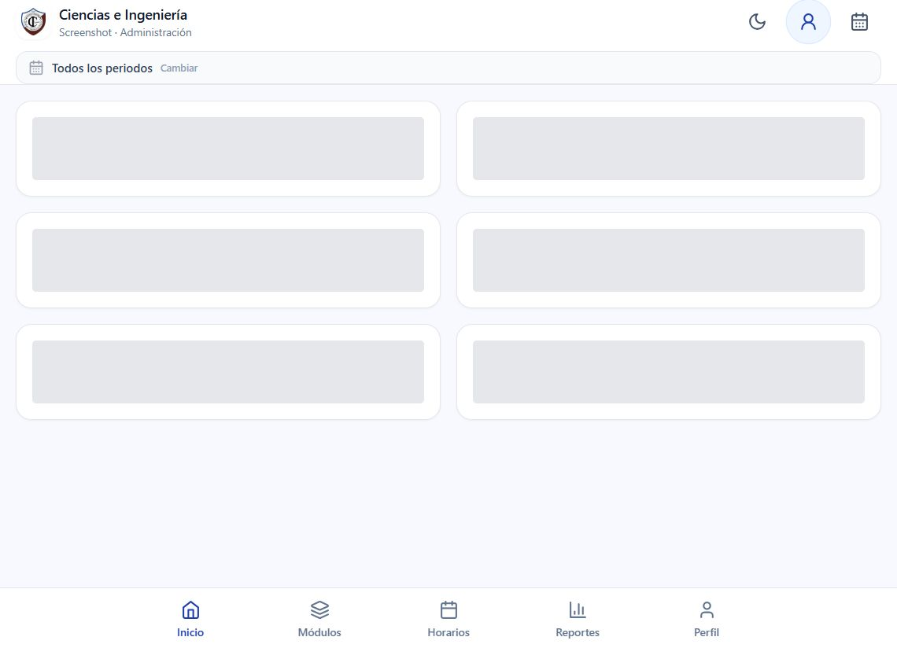
Panel de inicio con resumen y accesos rapidos.
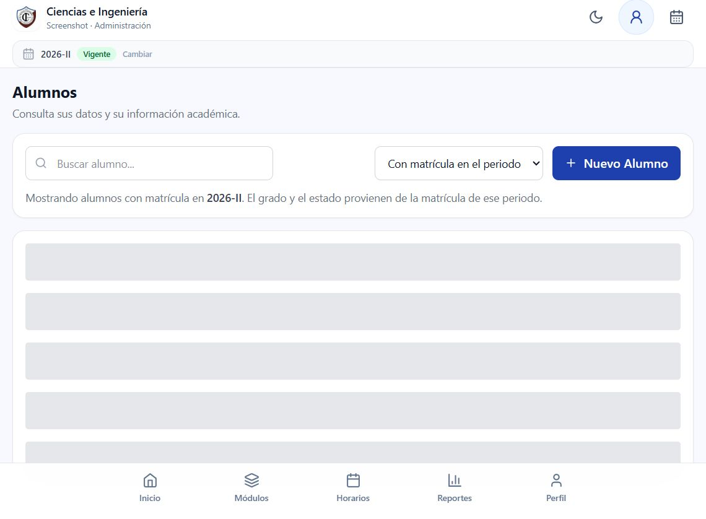
Registro, consulta y expediente academico.
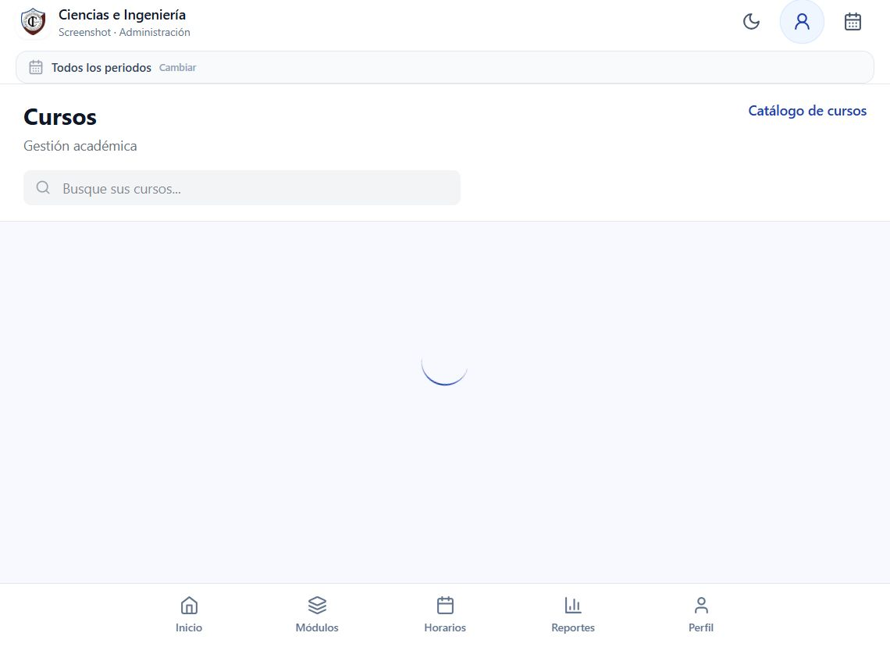
Ofertas academicas y asignaciones.
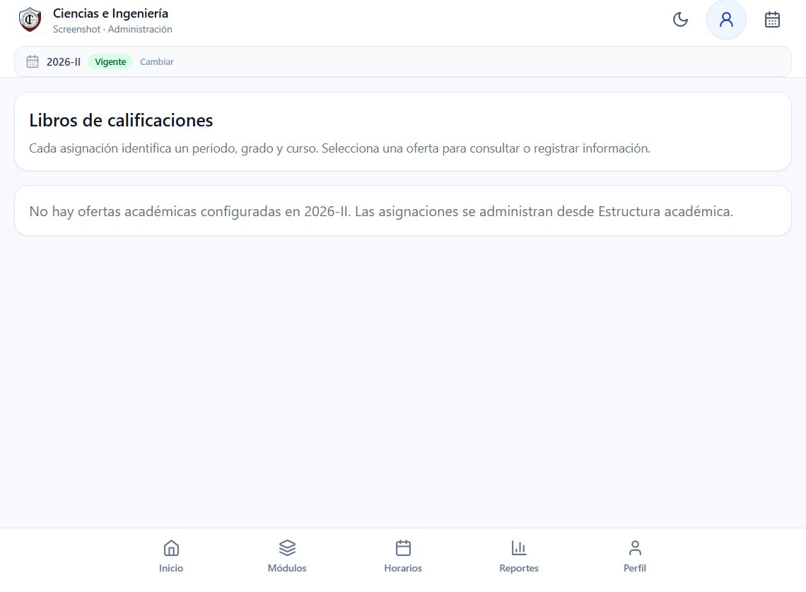
Registro de notas por curso, grado y periodo.
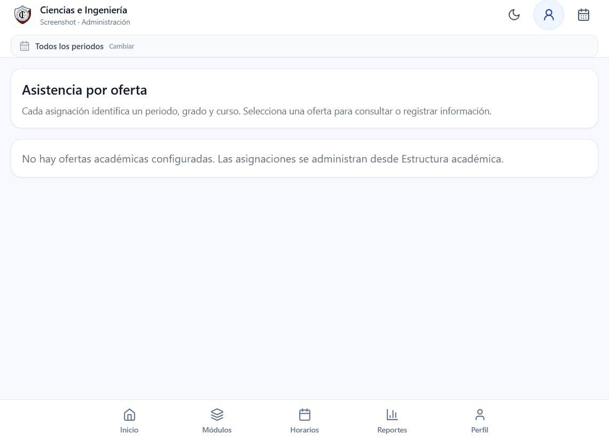
Control de asistencia por clase.
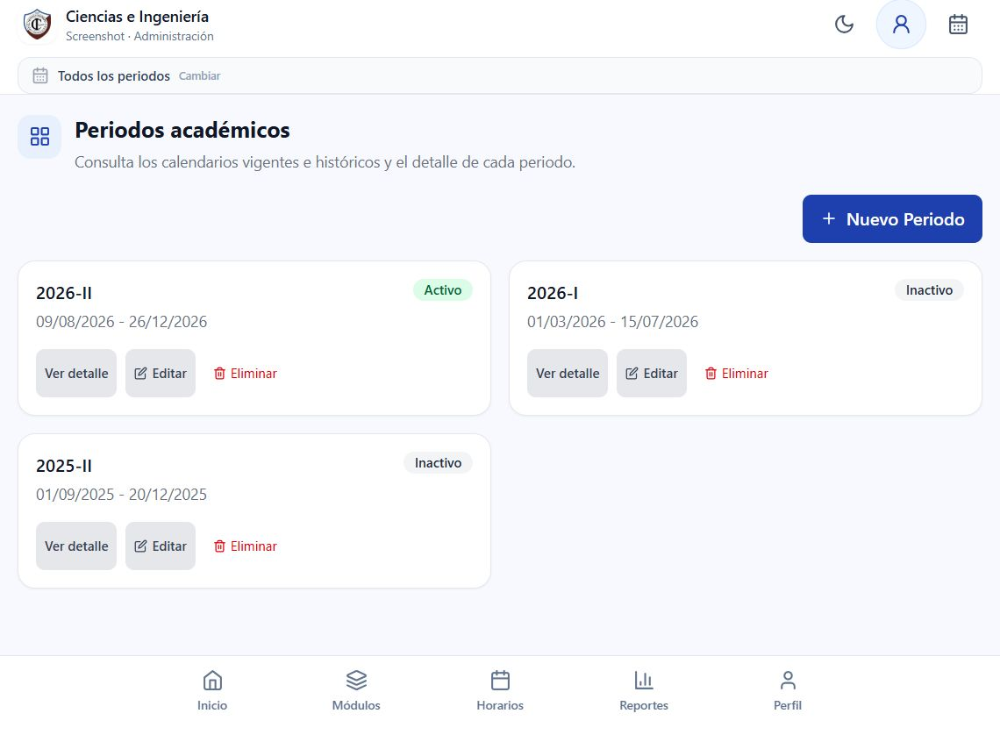
Calendario academico e historial.
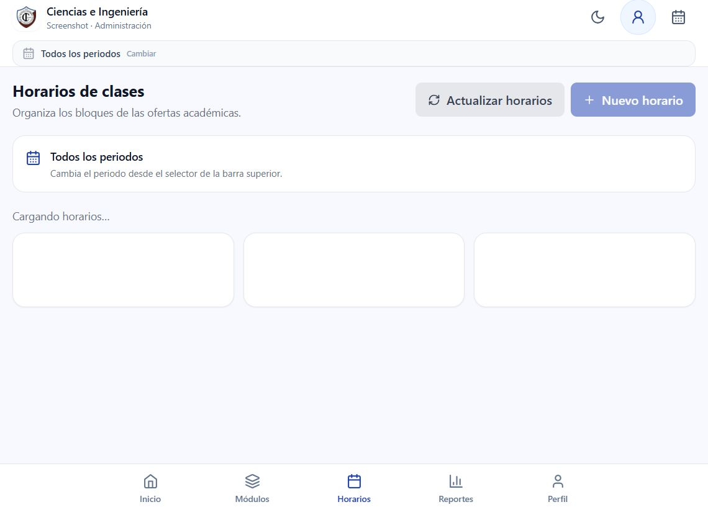
Organizacion y consulta de clases.
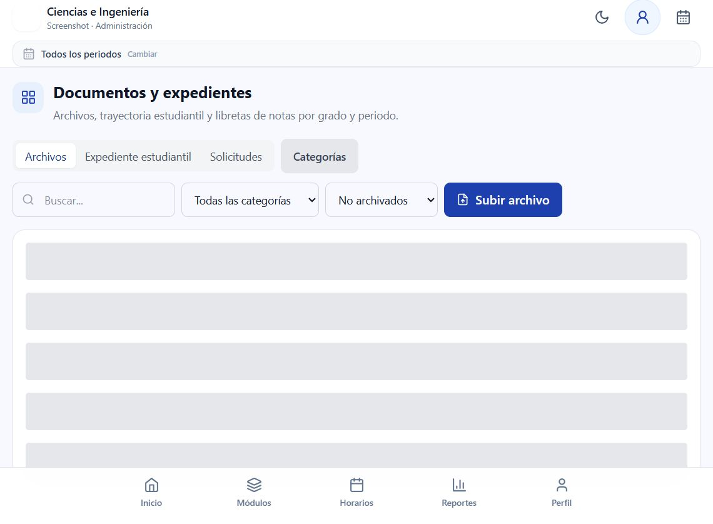
Expediente estudiantil y libreta de notas.
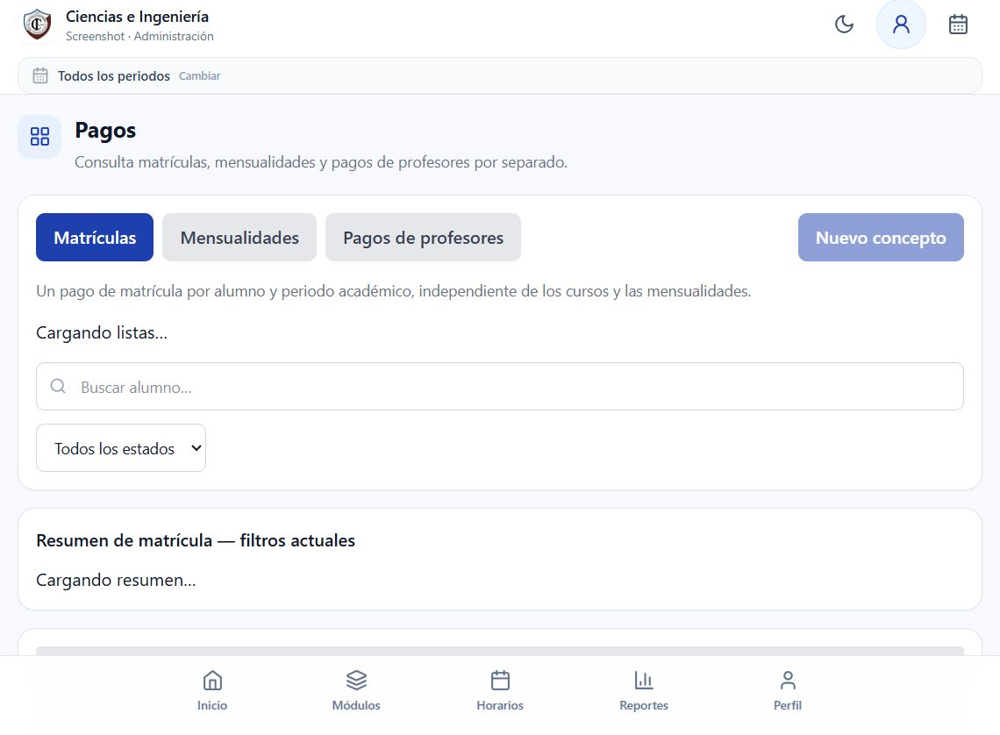
Matricula, mensualidades y sueldos.
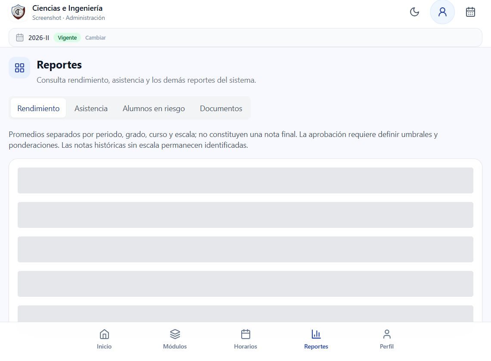
Consultas institucionales.
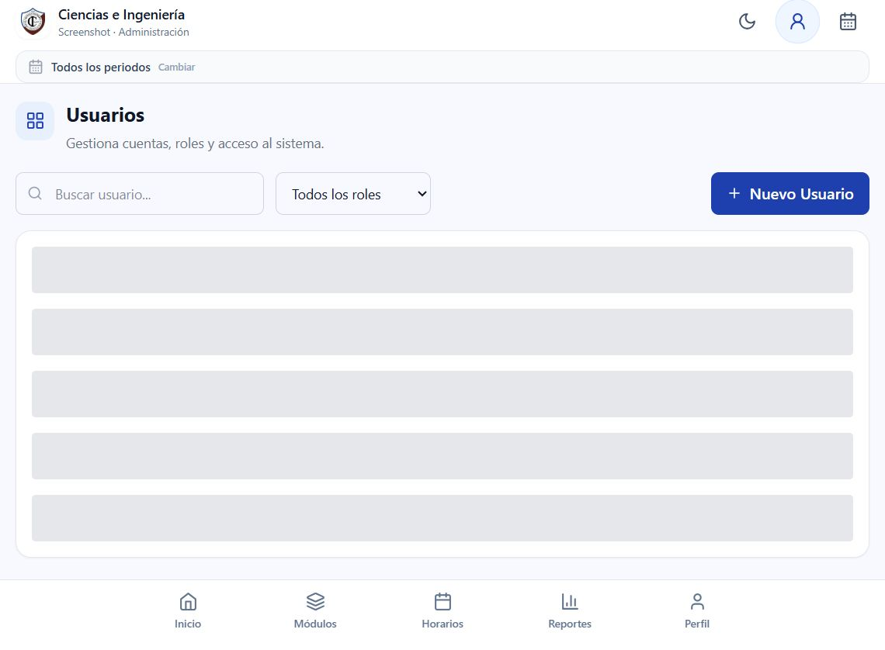
Cuentas y permisos de acceso.
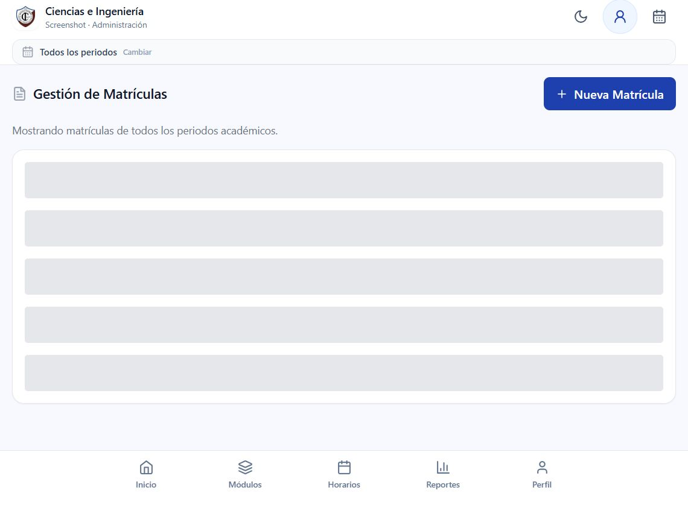
Inscripcion de alumnos por periodo.
Configura, registra, consulta y reporta